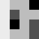
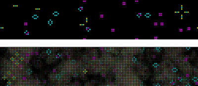

Week 7 -- Recursion, 2D Arrays
back to syllabusback to page 1 of week 7
2D Arrays
We know that an array keeps track of multiple pieces of information in a specific, linear order. However, the data associated with certain systems (a digital image, a board game, a "cellular automata") lives in two dimensions. To visualize this data, we need a multi-dimensional structure and we can do this by expanding the idea of an array beyond one dimensions.A 2 dimensional is really nothing more than an array of arrays (a 3 dimensional array is an array of an array of arrays.). In other words, if an array looks like this,
int[] myArray = {0,1,2,3};
a two-dimensional array looks like this:
int[][] myArray = {{0,1,2,3},{3,2,1,0},{3,5,6,1},{3,8,3,4}};
Nonetheless, for our purposes, we want to think of the 2D array as a matrix, i.e.:
int[][] myArray = { {0, 1, 2, 3},
{3, 2, 1, 0},
{3, 5, 6, 1},
{3, 8, 3, 4} };
We can use this type of data structure to encode information about an image. For example, the
following grayscale image:

might be represented by the following array:
int[][] myArray = { {236, 189, 189, 0},
{236, 80, 189, 189},
{236, 0, 189, 80},
{236, 189, 189, 80} };
To walk through every element of a one-dimensional array, we use a for loop, i.e.:
int[] myArray = new int[10];
for (int i = 0; i < myArray.length; i++) {
myArray[i] = 0;
}
For an N-dimensional array, in order to reference every element we must use N-nested loops, i.e.
int COLS = 10;
int ROWS = 10;
int[][] myArray = new int[COLS][ROWS];
for (int i = 0; i < COLS; i++) {
for (int j = 0; j < ROWS; j++) {
myArray[i][j] = 0;
}
}
and we might write a program using a 2D array to draw a grayscale image, i.e.
//set up dimensions
size(50,50);
int COLS = width;
int ROWS = height;
//declare 2D array
int[][] myArray = new int[COLS][ROWS];
//initialize 2D array values
for (int i = 0; i < COLS; i++) {
for (int j = 0; j < ROWS; j++) {
myArray[i][j] = int(random(255));
}
}
//draw points
for (int i = 0; i < COLS; i++) {
for (int j = 0; j < ROWS; j++) {
stroke(myArray[i][j]);
point(i,j);
}
}
We can also use a 2D array, to visualize a more complex system, such as John Conway's Game of Life.
For a full description of Conway's GOL, refer to this week's handout. You can also read
Mitch Resnick and Brian Silverman's essay "Exploring Emergence":
http://lcs.www.media.mit.edu/groups/el/projects/emergence/contents.html.
Here's a version of the Game of Life, implemented with processing:
int cellsize = 4;
int COLS, ROWS;
//game of life board
int[][] old_board, new_board;
void setup()
{
size(640, 240);
//initialize rows, columns and set-up arrays
COLS = width/cellsize;
ROWS = height/cellsize;
old_board = new int[COLS][ROWS];
new_board = new int[COLS][ROWS];
colorMode(RGB,255,255,255,100);
background(0);
//call function to fill array with random values 0 or 1
initBoard();
}
void loop()
{
background(0);
//loop through every spot in our 2D array and check spots neighbors
for (int x = 0; x < COLS;x++) {
for (int y = 0; y < ROWS;y++) {
int nb = 0;
//Note the use of mod ("%") below to ensure that cells on the edges have "wrap-around" neighbors
//above row
if (old_board[(x+COLS-1) % COLS ][(y+ROWS-1) % ROWS ] == 1) { nb++; }
if (old_board[x ][(y+ROWS-1) % ROWS ] == 1) { nb++; }
if (old_board[(x+1) % COLS ][(y+ROWS-1) % ROWS ] == 1) { nb++; }
//middle row
if (old_board[(x+COLS-1) % COLS ][ y ] == 1) { nb++; }
if (old_board[(x+1) % COLS ][ y ] == 1) { nb++; }
//bottom row
if (old_board[(x+COLS-1) % COLS ][(y+1) % ROWS ] == 1) { nb++; }
if (old_board[x ][(y+1) % ROWS ] == 1) { nb++; }
if (old_board[(x+1) % COLS ][(y+1) % ROWS ] == 1) { nb++; }
//RULES OF "LIFE" HERE
//if dead
if ((old_board[x][y] == 0) && (nb == 3)) { new_board[x][y] = 1; }
//if alive
else if ((old_board[x][y] == 1) && (nb == 2)) { new_board[x][y] = 1; }
else if ((old_board[x][y] == 1) && (nb == 3)) { new_board[x][y] = 1; }
else { new_board[x][y] = 0; }
}
}
int blend = 100;
//RENDER game of life based on "new_board" values
for ( int i = 0; i < COLS;i++) {
for ( int j = 0; j < ROWS;j++) {
if ((new_board[i][j] == 1)) {
int R,G,B; R = G = B = 255;
fill(R,G,B,blend);
//noStroke();
rect(i*cellsize,j*cellsize,cellsize,cellsize);
}
}
}
//swap old and new game of life boards
int[][] tmp = old_board;
old_board = new_board;
new_board = tmp;
}
//init board with random "alive" squares
void initBoard() {
background(0);
for (int i =0;i < COLS;i++) {
for (int j =0;j < ROWS;j++) {
if (int(random(2)) == 0) {
old_board[i][j] = 1;
} else {
old_board[i][j] = 0;
}
}
}
}
//re-set board when mouse is pressed
void mousePressed() {
initBoard();
}

Click here for two more versions of the same system
back to page 1